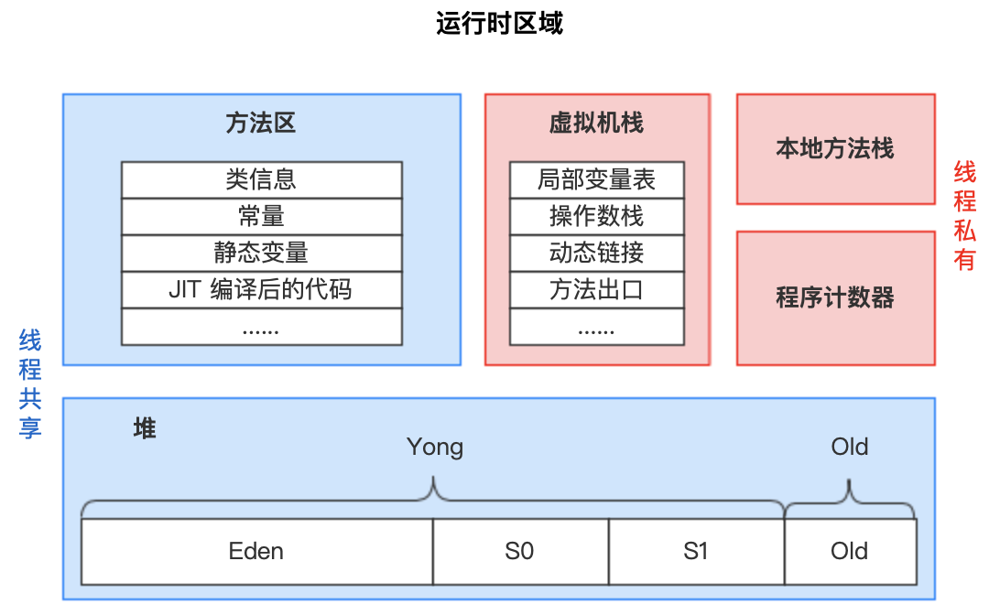
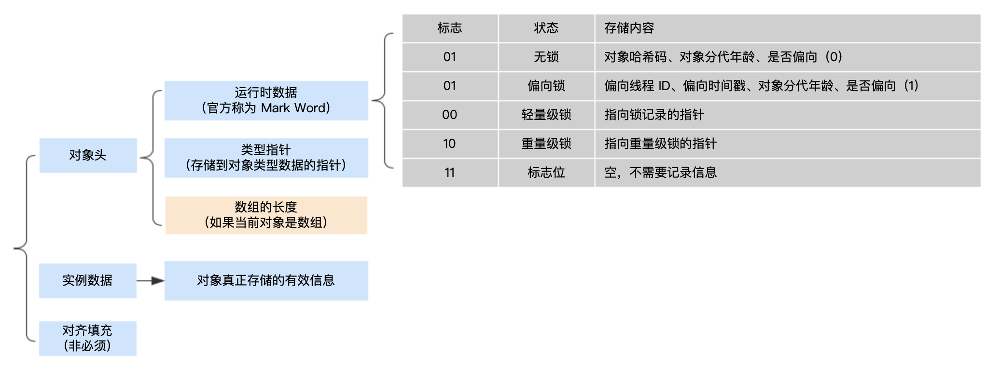
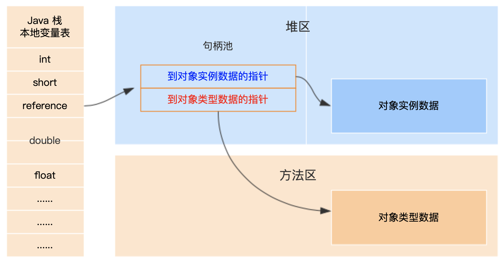
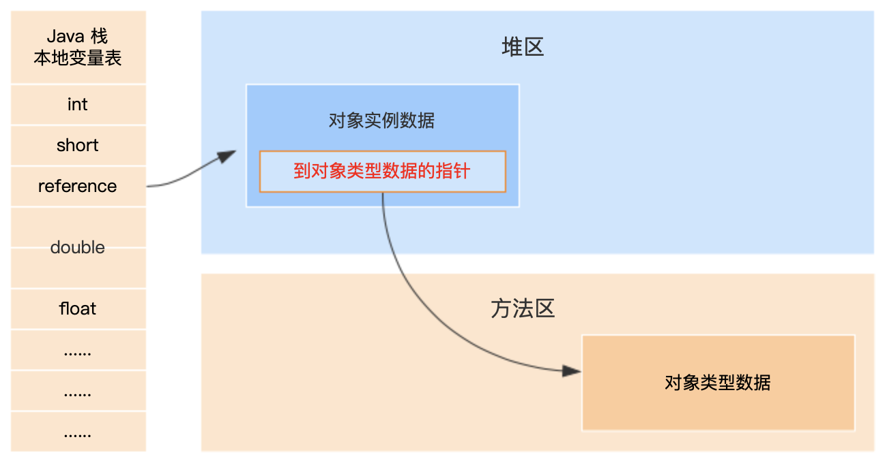

1 运行时数据区域
① 其实以上区域规划只是一个规范而已，至于各个厂商的具体实现就有可能不同了，比如对于 HotSpot 虚拟机并不区分虚拟机栈和本地方法栈。
② 程序计数器是唯一一个在 Java 虚拟机规范中没有规定任何 OutOfMemoryError 情况的区域。其他区域都有可能抛出 OutOfMemoryError。
③ 虚拟机栈和本地方法栈不仅可能抛出 OutOfMemoryError，还有可能会抛出 StackOverflowError。
1.1 程序计数器
可以看作是当前线程所执行的字节码的行号指示器，指向下一条要执行的指令。如果线程正在执行的是一个 Java 方法，这个计数器值为正在执行的虚拟机字节码指令的地址；如果正在执行的是 Native 方法，这个计数器值则为空。
1.2 虚拟机栈
描述的是 Java 方法执行的内存模型：每个方法在执行的同时都会创建一个栈帧用于存储局部变量表、操作数栈、动态链接、方法出口等信息。每一个方法从调用直到执行完成的过程，就对应着一个栈帧（栈帧是方法运行时的基础数据结构）在虚拟机栈中入栈到出栈的过程。
在 Java 虚拟机规范中，对这个区域规定了两种异常状况：如果线程请求的栈深度大于虚拟机所允许的深度，将抛出 StackOverflowError 异常；如果虚拟机栈可以动态扩展（当前大部分的 Java 虚拟机都可动态扩展，只不过 Java 虚拟机规范中也允许固定长度的虚拟机栈），当扩展时无法申请到足够的内存时会抛出 OutOfMemoryError 异常。
1.3 本地方法栈
虚拟机栈与本地方法栈的区别：① 虚拟机栈为虚拟机执行 Java 方法（也就是字节码）服务。② 本地方法栈则是为虚拟机使用到的 Native 方法服务。
虚拟机规范中对本地方法栈中的方法使用的语言、使用方式与数据结构并没有强制规定，因此具体的虚拟机可以自由实现它。甚至有的虚拟机（譬如 Sun HotSpot 虚拟机）直接就把本地方法栈和虚拟机栈合二为一。与虚拟机栈一样，本地方法栈区域也会抛出 StackOverflowError 和 OutOfMemoryError 异常。
1.4 堆
Java 虚拟机规范中的描述：所有的对象实例以及数组都要在堆上分配，但是随着 JIT 编译器的发展与逃逸分析技术逐渐成熟，栈上分配、标量替换优化技术将会导致一些微妙的变化，所有对象分配在堆上也渐渐变得不是那么“绝对”了。
由于现在收集器基本都是采用的分代收集算法，所以 Java 堆中还可以细分为：新生代和老年代；再细致一点的有 Eden 空间、From Survivor 空间、To Survivor 空间等（默认 Eden : From Survivor : To Survivor = 8:1:1）。如果从内存分配的角度看，线程共享的 Java 堆中可能划分出多个线程私有的分配缓冲区（Thread Local Allocation Buffer，TLAB）。不论如何划分，都与存放内容无关，无论哪个区域，存储的都是对象实例，进一步划分的目的是为了更好的回收内存，或者更快地分配内存。
扩展一：为什么要分成新生代和老年代？因为跟垃圾回收有关，参见：深究 JVM-02：垃圾收集器与内存分配策略
扩展二：为何需要两个 Survivor 空间？
Java 堆可以处于物理上不连续的内存空间中，只要逻辑上是连续的即可（就像我们的磁盘空间一样）。在实现时，既可以实现成固定大小的，也可以是可扩展的，不过当前主流的虚拟机都是按照可扩展来实现的（通过 -Xmx 和 -Xms 控制）。如果在堆中没有内存完成实例分配，并且堆也无法再扩展时，将会抛出 OutOfMemoryError 异常。
1.5 方法区
存储已被虚拟机加载的类信息、常量、静态变量、即时编译器编译后的代码等数据。虽然 Java 虚拟机规范把方法区描述为堆的一个逻辑部分，但是它却有一个别名叫做 Non-Heap（非堆），目的应该是与 Java 堆区分开来。
方法区与永久代（Permanent Generation）本质上两者并不等价。仅仅是因为 HotSpot 虚拟机的设计团队选择把 GC 分代收集扩展至方法区，或者说使用永久代来实现方法区而已（将方法区理解为一套规范，只是 HotSpot 虚拟机用永久代去实现这套规范而已）。对于其他虚拟机（如 BEA JRockit、IBM J9 等）来说是不存在永久代的概念的。Java 7 中已经将原本放在永久代的字符串常量池移除。
方法区同堆区一样不需要连续的内存，可以选择固定大小或者可扩展。
方法区可以选择不实现垃圾收集。垃圾收集在这个区域是比较少出现的，但并非数据进入了方法区就如永久代的名字一样“永久”存在了。这区域的内存回收目标主要是针对常量池的回收和对类型的卸载，一般来说，这个区域的回收“成绩”比较难以令人满意，尤其是类型的卸载，条件相当苛刻，但是这部分区域的回收确实是必要的。在 Sun 公司的 BUG 列表中，曾出现过的若干个严重的BUG就是由于低版本的 HotSpot 虚拟机对此区域未完全回收而导致内存泄漏。
Java 虚拟机规范的规定，当方法区无法满足内存分配需求时，将抛出 OutOfMemoryError 异常。
运行时常量池是方法区的一部分。Class 文件中除了有类的版本、字段、方法、接口等描述等信息外，还有一项信息是常量池（见：深究 JVM-04-类文件结构），用于存放编译期生成的各种字面量和符号引用，这部分内容将在类加载后存放到方法区的运行时常量池中。Java 虚拟机对 Class 文件的每一部分（自然也包括常量池）的格式都有严格的规定，每一个字节用于存储哪种数据都必须符合规范上的要求，这样才会被虚拟机认可、装载和执行。但对于运行时常量池，Java 虚拟机规范没有做任何细节的要求，不同的提供商实现的虚拟机可以按照自己的需要来实现这个内存区域。不过，一般来说，除了保存 Class 文件中描述的符号引用外，还会把翻译出来的直接引用也存储在运行时常量池中。运行时常量池相对于 Class 文件常量池的另外一个重要特征是具备动态性，Java 语言并不要求常量一定只能在编译期产生，也就是并非预置入 Class 文件中常量池的内容才能进入方法区运行时常量池，运行期间也可能将新的常量放入池中，这种特性被开发人员利用得比较多的便是 String 类的 intern() 方法。既然运行时常量池是方法区的一部分，无法申请到内存时会抛出 OutOfMemoryError 异常。
在 HotSpot 虚拟机中 Java 8 之前使用永久代来实现方法区，在 Java 8 版本改为使用元空间（MetaSpace），之所以替换的原因是因为在 Java 8 之前虚拟机会根据 -XX:PermSize 以及 -XX:MaxPermSize 参数配置的大小来分配一块连续的内存块，但是随着动态类加载的情况越来越多，这块内存变得不可控，-XX:PermSize 以及 -XX:MaxPermSize 参数到底设置多大才是最合适的是每个开发者要考虑的问题，如果设置太小，系统运行过程中就容易出现内存溢出，设置大了就总感觉浪费。所以元空间出现了，它出现的本意就是希望内存的管理不再受限制，也不用关注元数据这块的 OutOfMemoryError 问题，尽管从目前看来也并没有完美解决这个问题。
更多关于方法区、永久代、元空间的知识点请参考以下资料：
- 官方文档：Class Metadata
- 官方文档：Understand the OutOfMemoryError Exception
- 阿飞的博客：JVM 参数 MetaspaceSize 的误解
- 你假笨：JVM 源码分析之 Metaspace 解密
1.6 直接内存
直接内存并不是虚拟机运行时数据区的一部分，也不是 Java 虚拟机规范定义的内存区域。但是这部分内存也被频繁地使用，而且也可能导致 OutOfMemoryError 异常。在 JDK1.4 中新加入了 NIO（New Input/Output）类，引入了一种基于通道与缓冲区的 I/O 方式，它可以使用 Native 函数库直接分配堆外内存，然后通过一个存储在 Java 堆中的 DirectByteBuffer 对象作为这块内存的引用进行操作，这样能在一些场景中显著提高性能，因为避免了在 Java 堆和 Navtive 堆中来回复制数据。
显然，本机直接内存的分配不受 Java 堆大小的限制，但是，既然是内存，还是受本机总内存大小以及处理器寻址空间的限制。
2 HopSpot 虚拟机与堆中的对象
在此以常用的虚拟机 Hotspot 和常用的内存区域 Java 堆为例，深入探讨 Hotspot 虚拟机在 Java 堆中对象分配、布局和访问的全过程。
2.1 对象的创建
语言层面，创建对象（例如克隆、反序列化）通常仅仅是一个 new 关键字而已，而在虚拟机中对象的创建又是怎样的一个过程呢？① 虚拟机遇到一条 new 指令时，首先会去检查该指令的参数能否在常量池中定位到这个类的符号引用，并且检查这个符号引用代表的类是否已被加载、解析、初始化过，如果没有，则必须先执行相应的类加载过程。② 在类加载检查完成后，虚拟机将为新对象分配内存空间，且对象所需内存空间大小在其完成类加载检查后即可确定，该过程其实就是在堆中划分一小部分的确定大小的空间，用于存储对象信息。
2.1.1 虚拟机为新对象分配内存的分配方式
指针碰撞：假设 Java 堆中内存是绝对规整的，所有用过的内存都放在一边，空闲的内存放在另一边，中间放着一个指针作为分界点的指示器，那所分配内存就仅仅是把那个指针向空闲空间那边挪动一段与对象大小相等的距离，这种分配方式称 为“指针碰撞”。
空闲列表：如果 Java 堆中的内存并不是规整的，已使用的内存和空闲的内存相互交错，那就没有办法简单地进行指针碰撞了，虚拟机就必须维护一个列表，记录上哪些内存块是可用的，在分配的时候从列表中找到一块足够大的空间划分给对象实例，并更新列表上的记录。
选择哪种分配方式由 Java 堆是否规整决定，而 Java 堆是否规整又由所采用的垃圾收集器是否带有压缩整理功能决定。因此，在使用 Serial、ParNew 等带有 Compact 过程的收集器时，系统采用的分配算法是指针碰撞，而使用 CMS 这种基于 Mark-Sweep 算法的收集器时，通常采用空闲列表。
2.1.2 并发分配内存两种方案
除如何划分可用空间之外，还有另外一个需要考虑的问题是对象创建在虚拟机中是非常频繁的行为，即使是仅仅修改一个指针所指向的位置，在并发情况下也并不是线程安全的，可能出现正在给对象 A 分配内存，指针还没来得及修改，对象 B 又同时使用了原来的指针分配内存的情况。那么如何应对并发分配内存呢？方案有两种。
方案一：对分配内存空间的动作进行同步处理——实际上虚拟机采用 CAS（Compare And Switch）配上失败重试的方式保证更新操作的原子性。
方案二：把内存分配的动作按照线程划分在不同的空间之中进行，即每个线程在 Java 堆中预先分配一小块内存，称为本地线程分配缓冲（Thread Local Allocation Buffer ，TLAB），哪个线程需要分配内存，就在哪个线程的 TLAB 上分配，只有 TLAB 用完并分配新的 TLAB 时，才需要同步锁定。虚拟机是否使用 TLAB，可以通过参数 -XX:+/-UseTLAB 参数来设定。
内存分配完成后，虚拟机需要将分配到的内存空间都初始化为零值（不包括对象头），如果使用 TLAB，这一工作过程也可以提前至 TLAB 分配时进行。这一步操作保证了对象的实例字段在 Java 代码中可以不赋初始值就直接使用，程序能访问到这些字段的数据类型所对应的零值。
接下来，虚拟机要对对象进行必要的设置，例如这个对象是哪个类的实例、如何才能找到类的元数据信息、对象的哈希码、对象的 GC 分代年龄等信息。这些信息存放在对象的对象头中，根据虚拟机当前的运行状态不同，如是否启用偏向锁或轻量级锁，对象头会有不同的设置方式。详细介绍参见：2.2 对象的内存布局。
在上面工作都完成之后，从虚拟机的视角来看，一个新的对象已经产生了，但从 Java 程序的视角来看，对象创建才刚刚开始， <init> 方法还没有执行，<init> 方法是在一个类进行对象实例化时调用的，所有字段都还为零值。所以，一般来说，执行 new 指令之后会接着执行 <init> 方法，把对象按照程序员的意愿进行初始化，这样一个真正可用的对象才算完全产生出来。
总结下虚拟机的创建过程：
2.2 对象的内存布局
对象在内存中存储的布局区域：
实例数据部分是对象真正存储的有效信息，也是在程序代码中所定义的各种类型的字段内容。无论是从父类中继承下来的，还是在子类中定义的，都需要记录下来。这部分的存储顺序会受到虚拟机分配策略参数（FieldAllocationStyle）和字段在 Java 源码中定义顺序的影响。Hotspot 虚拟机默认的分配策略为 longs/doubles、ints、shorts/chars、bytes/booleans、oops (Ordinary Object Pointers)，可见，相同宽度的字段会被分配在一起。在满足这个前提条件下，父类中定义的变量会出现在子类之前。如果 CompactField 参数值为 true（默认为 true），那么子类之中较窄的变量也可能会插入到父类变量的空隙之中。
2.3 对象的访问定位
建立对象就是为了使用对象，我们的 Java 程序需要通过栈上的 reference 数据来操作堆上的具体对象。由于 reference 类型在 Java 虚拟机规范中只规定了一个指向对象的引用，并没有定义这个引用应该通过何种方式去定位、访问堆中的对象的具体位置，所以对象访问方式也是取决于虚拟机实现而定的。目前主流的访问方式有使用句柄和直接指针两种。
2.3.1 句柄访问方式
句柄访问会在 Java 堆中会划分出一块内存来作为句柄池，reference 中存储的就是对象的句柄地址，而句柄中包含了对象实例数据与类型数据各自的具体地址信息。
优势：reference 中存储的是稳定的句柄地址，在对象被移动（垃圾收集时移动对象是非常普遍的行为）时只会改变句柄中的实例数据指针，而 reference 本身不需要修改。
缺点：由于多了一次指针定位对象实例数据的开销，所以速度相比较慢。
2.3.2 直接指针方式
直接指针访问方式在 Java 堆对象中存放了一个指向对象类型数据的指针，Sun HotSpot 采用的就是这种方式进行对象访问的，在 HotSpot 中，这个指针会被存放在对象头中。
优势：减少了一次指针定位对象实例数据的开销，速度更快。
缺点：由于对象的访问在 Java 中非常频繁，因此这类开销积少成多后也是一项非常可怕的执行成本。